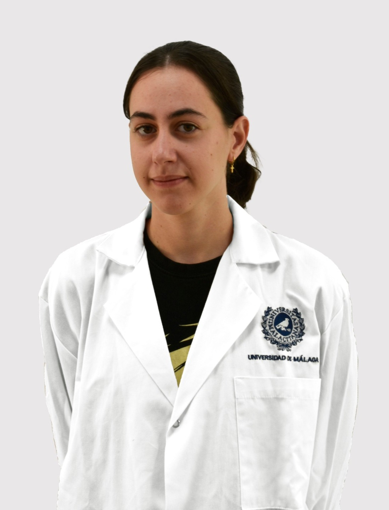

iGEM UMA Team member & Team Leader 25-26
Student group directed by Professors Carlos Rodríguez Caso and Manuel Bernal Muñoz, focused on Synthetic Biology, offering practical and interdisciplinary training that complements our degree.
Málaga · HybridBiochemistry · Synthetic Biology · Biotech
Biochemistry undergraduate and Team Leader of iGEM UMA 25-26, programming life one gene circuit at a time.

I'm a Biochemistry student at the University of Málaga with a deep curiosity for how cells compute, build and adapt. My focus is on molecular biology, synthetic biology and biotechnology.
As Team Leader of iGEM UMA, I coordinate a multidisciplinary student team that designs engineered biological systems, from the first idea to the bench.
Student group directed by Professors Carlos Rodríguez Caso and Manuel Bernal Muñoz, focused on Synthetic Biology, offering practical and interdisciplinary training that complements our degree.
Málaga · HybridCertification awarded by FGUMA, Fundación General de la Universidad de Málaga.
Universidad de Málaga
University of Cambridge
A baby's diagnosis should not depend on their nationality.
Team Leader of the Frida project at iGEM UMA 25-26.
Around 300 million people live with a rare disease, and most of these conditions begin in childhood. What a newborn is screened for depends on where they are born: in Spain, the heel-prick test covered from 15 to 45 conditions in 2024 depending on the region.
Frida is the University of Málaga's 2026 iGEM project. It screens mutation-derived RNA from a minimally invasive blood sample using CRISPR-SHERLOCK: a guide RNA directs the LwCas13a enzyme to a specific mutation, and when it finds it, the enzyme cuts fluorescent reporters and the sample lights up, with no sequencing infrastructure required.
With one guide per mutation, many diseases can be screened side by side. The team also built Diana, a web app that turns a mutation into an order-ready guide RNA.
Two experiments to play with. No lab coat needed.
Type a DNA coding sequence (A, T, G, C) and watch it become mRNA and then protein.
A synthetic biologist's classic: an inducer unlocks the promoter and the cell starts making a glowing reporter protein. Move the slider.
Open to collaborations, research opportunities and conversations about synthetic biology.
LinkedIn → ORCID · 0009-0009-8090-1354 martaperand.trabajo@gmail.com